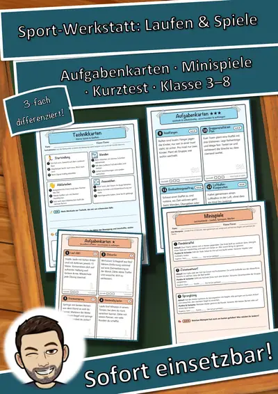
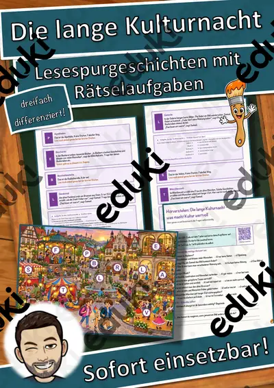
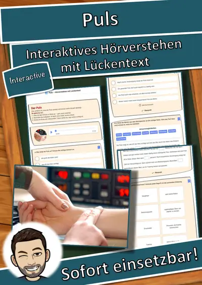

Ausdauer – der lange Atem – Lesespurgeschichte mit Rätselaufgaben (Klasse 8)
Ausdauer – der lange Atem – Lesespurgeschichte Sport (Klasse 8)Schick deine Klasse auf eine Lesespur durch einen Ausdauer-Projekttag im Sportpark am See! Mattis ist überzeugt: „Ich bin Sprinter – lange laufen ist nichts für mich.“ Defne dagegen will im Frühling ihren ersten Fünf-Kilometer-Lauf schaffen. Am Infopavillon klären die beiden, was Ausdauer überhaupt ist, auf dem Uferweg erproben sie die Dauermethode im Plaudertempo, an der Pulsbank steuern sie ihre Belastung über den Puls. Auf dem Fahrtspielpfad wechselt das Tempo mit dem Gelände, an der Intervalltreppe geht es um die lohnende Pause, auf der Finnenbahn um den 12-Minuten-Lauf. An der Herztafel wird sichtbar, wie sich Herz und Muskeln durch Training anpassen, im Energiezelt geht es um Kohlenhydrate, Fette und Trinken – und auf der Auslaufwiese um Erholung. Die Trinkflasche Perli ist immer dabei. Am Ende jedes Abschnitts verrät ein Hinweis den nächsten Ort auf dem Plan – nur wer genau liest, findet den Weg und sammelt alle geheimen Buchstaben zum Lösungswort.
Die passende Lesespur für den SPORTUNTERRICHT der 8. Klasse – ideal als Einstieg in eine Laufeinheit, zur Vorbereitung eines 12-Minuten-Laufs, für Sporttheorie bei Hallenausfall oder fächerübergreifend mit Biologie: Sie verbindet sinnentnehmendes Lesen mit Trainingswissen, Pulsmessung und Gesundheitsbewusstsein. Das Material ist SOFORT EINSETZBAR und in DREI DIFFERENZIERUNGSSTUFEN (leicht ★ / mittel ★★ / schwer ★★★) angelegt.WICHTIG: Das komplette Material ist sowohl in FARBE als auch in SCHWARZ-WEISS enthalten – ideal zum Sparen von Druckkosten.DAS IST ENTHALTEN
- Lesespurgeschichte in 3 Niveaus (leicht, mittel, schwer)
- farbiger Parkplan als Suchkarte
- Hörverstehen mit QR-Code zur MP3 (selbstständiges Hören mit Kopfhörern)
- vier Aufträge auf dem Weg: ein Quiz, eine Zuordnung, eine Rechenaufgabe und ein Steckbrief
- Rätselseite (Wörter-Suchsel + Fragen)
- Ausmalbild zum Thema (Joggen am See)
- ausführliches Lösungsblatt für die Lehrkraft
- alles zusätzlich als komplette Schwarz-Weiß-VarianteSO GEHT DIE LESESPURDie Jugendlichen lesen ab START, finden im Text den nächsten Ort, suchen ihn auf dem Plan und lesen bei dieser Station weiter. An jeder richtigen Station gibt es einen Buchstaben. Eingebaute Sackgassen (Bootssteg, Grillplatz, Eisdiele, Minigolf) sind keine Stationen und dienen der Selbstkontrolle. Am Ende werden die gesammelten Buchstaben umgestellt und ergeben ein geheimes Lösungswort. (Die Lösungen sind selbstverständlich nur im Lösungsblatt für die Lehrkraft enthalten.)INHALTLICHER SCHWERPUNKTBegriff Ausdauer und Ausdauersportarten, Grundlagenausdauer, Dauermethode („Laufen ohne Schnaufen“), Puls messen und Belastung steuern, Fahrtspiel, Intervallmethode mit lohnender Pause, 12-Minuten-Lauf und gleichmäßiges Tempo, Anpassungen von Herz, Kreislauf und Muskulatur (Ruhepuls sinkt), Energie aus Kohlenhydraten und Fetten, richtig trinken, Auslaufen und Erholung.ABGEDECKTER LEHRPLAN (Klasse 8, Sport)
- Sport (LehrplanPLUS Bayern) – Jahrgangsstufe 8 „Gesundheit und Fitness“: Ausdauer gezielt verbessern, Trainingsmethoden kennen und anwenden, Belastung über den Puls steuern, Wirkungen von Training auf den Körper verstehen.
- Deutsch – Lesen: Sachtexten gezielt Informationen entnehmen; Zuhören: einem Sachhörtext folgen (Hörverstehen mit MP3).
- Mathematik – Sachrechnen mit Zeit und Strecke, Dezimalzahlen, Multiplikation und Division.
- Fächerübergreifend / Kompetenzen: Biologie (Herz-Kreislauf-System, Atmung, Energie), Gesundheitserziehung, Selbstkompetenz (eigenes Training planen).
Geeignet für Freiarbeit, Stationenlernen, Vertretungsstunden, Wochenplan, Projekttage, Sporttheorie und Distanzunterricht. Klassenstufe 8.
Ähnliche Materialien

Der sichtbare Atem – Lesespurgeschichte mit Rätselaufgaben (Klasse 3)

Laufen im Gelände – Crosslauf im Herbst – Lesespurgeschichte mit Rätselaufgaben (Klasse 7)

Sport-Werkstatt Paket Laufen & Spiele: 2 Sportarten in 3 Stufen (Klasse 3–8)

Die lange Kulturnacht – was macht Kultur wertvoll? – Lesespurgeschichte mit Rätselaufgaben (Klasse 3)

Sprinten und Starten – schnell wie der Wind – Lesespurgeschichte mit Rätselaufgaben (Klasse 3)

Puls – Hörverstehen mit Lückentext (interaktiv)

Puls Lückentext mit Wortspeicher Hörverstehen und Suchsel